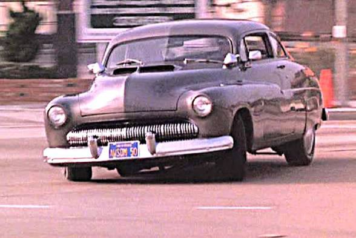

🐍 🕶️ 🔥COBRA (1986) — CERTIFIED MGC VF-28

⚖ MGC INITIAL INQUEST
- ASSET TITLE: Cobra (1986) — The Los Angeles Zombie-Squad Matchstick Ledger
- OFFICIAL REGISTRY GRADE: VF-28 (Very Fine / Circulated Cannon-Alloy Specimen) 🏎️
- JURISDICTION: Lower Tribunal Room / 1980s Street-Level Vigilante Docket
- PRESIDING FORENSIC EXAMINER: Judge Dex, Chief of R&D & Action Judge
- CASE FILE: #067
📜 THE INITIAL BENCH ASSESSMENT
Under the 5x lens, George P. Cosmatos and Sylvester Stallone’s 1986 Cannon Films action vehicle delivers undeniable 1980s chrome-plated aura—complete with aviator sunglasses, a customized 1950 Mercury Monterey, a laser-sighted Jatimatic submachine gun, and cutting cold pizza with scissors. However, beneath the high-testosterone surface, the specimen exhibits heavy studio butcher-cuts and severe narrative corrosion that cap it squarely in the circulated VF-20 to VF-37 race-car tier:
🚨 THE 3-FLAW DEFECT LOG:
1. The 40-Minute Studio Butcher-Cut Scuff (Structural Planchet Mutilation)
The Defect:
Originally shot as a nearly two-hour R-rated dark thriller, Warner Bros. and Cannon hacked the runtime down to a brisk 87 minutes to avoid an X-rating and squeeze in extra theater showtimes.The Forensic Data:
Sliding the 5x lens across the transitions reveals jagged editing scars. Entire subplots, character introductions, and murder investigations vanish mid-sentence, leaving the narrative alloy noticeably thin and choppy.
2. The “New World” Axe-Cult Logic Void (Antagonist Alloy Weakness
The Defect:
Brian Thompson’s villain, the “Night Slasher,” leads a massive, organized underground army of axe-clanking cultists whose entire master plan is randomly murdering innocent people in Los Angeles to “weed out the weak.”The Forensic Data:
There is zero coherent motivation, command structure, or end-game explained on screen—just dozens of guys clanking axes together in a warehouse before charging one-by-one into Stallone’s gunfire.
3. Uncalibrated LAPD Zombie-Squad Protocols (Procedural & Realism Friction)
The Defect:
Marion Cobretti operates as a one-man constitutional wrecking ball who drives on sidewalks, assaults fellow officers, ignores every basic police procedure, and suffers zero administrative consequences.The Forensic Data:
Even by 1980s action standards, the complete lack of grounded police mechanics or believable tactical escalation pushes the coin deep into pure cartoon vigilante territory.
🔍 THE CHIEF OF R&D’s INITIAL DECREE & APPELLATE REVIEW
- All three defects—the 40-minute studio butcher-cut scuff, the “New World” axe-cult logic void, and the uncalibrated LAPD Zombie-Squad protocols—were formally reviewed and SUSTAINED by the Chief Justice for introducing severe narrative fragmentation and cartoon vigilante friction.
⚖ THE FINAL JUDICIAL DECREE
- With all three structural and procedural defects permanently sustained on the record, the corporate nostalgia glow is stripped away. While the 1950 Mercury Monterey, laser-sighted Jatimatic, and cold-pizza scissors deliver undeniable 1980s drive-in entertainment velocity, the missing footage and incoherent villain logistics anchor this specimen firmly in the circulated middle registers.
- Permanently sealed in the archives as a Certified MGC VF-28 Choice Circulated Specimen. Case #067 is officially closed. 🏎️🕶️🍕🔫🔨

• © 2026 MOVIE GRADING CONSENSUS. All Sovereign Rights Reserved.